Overview
The Empyrean is a fantasy book series written by author Rebecca Yarros. The series features a world shaped by dragons, military structures, rider training, and political conflicts, combining elements of fantasy with romance and adventure. The story follows characters who face challenges in an environment where strength, strategy, and alliances can determine survival. Throughout the books, the series' fictional world expands, revealing more about its characters, creatures, and the conflicts that shape their lives. This encyclopedia brings together information about the series, its author, fictional universe, characters, published books, and related adaptations. Its purpose is to organize this information in one place, making it easier for readers to explore the different aspects of the series.
Fictional Universe
Plot Summary
The Empyrean series, written by Rebecca Yarros, follows Violet Sorrengail in a fantasy world shaped by dragons, military conflict, and political struggles. Originally expected to join the Scribes Quadrant, where she planned to dedicate her life to books and history, Violet is ordered by her mother, General Lilith Sorrengail, to enter the Riders Quadrant at Basgiath War College. In this demanding environment, candidates must demonstrate intelligence, resilience, and the ability to survive their training and earn a bond with a dragon. Considered physically more vulnerable than many of her fellow cadets, Violet must find ways to overcome her limitations and face the dangers of an institution where few candidates make it to the end. As her training progresses, Violet begins to question what she has been taught about her kingdom's history and the war threatening its borders. Through alliances, rivalries, and discoveries, her journey becomes part of a conflict far greater than the challenges within Basgiath's walls.
World and Setting
The world of The Empyrean is primarily set in the kingdom of Navarre, a nation protected by magical wards and involved in a longstanding conflict with neighboring territories. Dragons occupy a central role in the kingdom's defense, and riders who form bonds with these creatures serve as an important part of its military forces. One of the main settings in the early books is Basgiath War College, an institution responsible for training members of Navarre's armed forces. Its students are divided into four quadrants: Riders, Scribes, Healers, and Infantry, each with its own duties and responsibilities. Training in the Riders Quadrant is particularly demanding, combining physical instruction, skill-based challenges, and the process through which dragons choose their human partners. Beyond the college, war, political divisions, and secrets surrounding the kingdom's history directly influence the characters' lives. The setting combines elements of epic fantasy, military hierarchies, magical creatures, and political intrigue. As the narrative progresses, additional locations, traditions, and aspects of this fictional world's history are introduced.
Dragon System
Dragons are one of the fundamental elements of The Empyrean universe. In addition to being powerful magical creatures, they possess intelligence, distinct personalities, and the ability to make their own decisions. Unlike ordinary mounts, dragons choose the humans with whom they wish to form a bond. This bond is essential to becoming a rider. Candidates who survive Basgiath's training participate in Threshing, a stage during which they encounter dragons and may be chosen to form a partnership. Selection is not guaranteed, and a dragon may reject a candidate it considers unsuitable. The connection between a dragon and its rider is also associated with the manifestation of individual magical abilities known as signets. These abilities vary from rider to rider and form an important part of their identity and military role. Dragons have different colors, physical characteristics, and tail types, which help distinguish them within this universe. Their traits, abilities, and relationships with riders influence both training and the events of the series. The bonding system establishes a partnership between two beings with independent wills, in which trust, compatibility, and power play significant roles.
Characters
Main Characters
Violet Sorrengail, the protagonist of the series. Violet enters the Riders Quadrant at Basgiath War College despite having spent years preparing to become a Scribe. Her intelligence, determination, and curiosity play a central role in her journey.
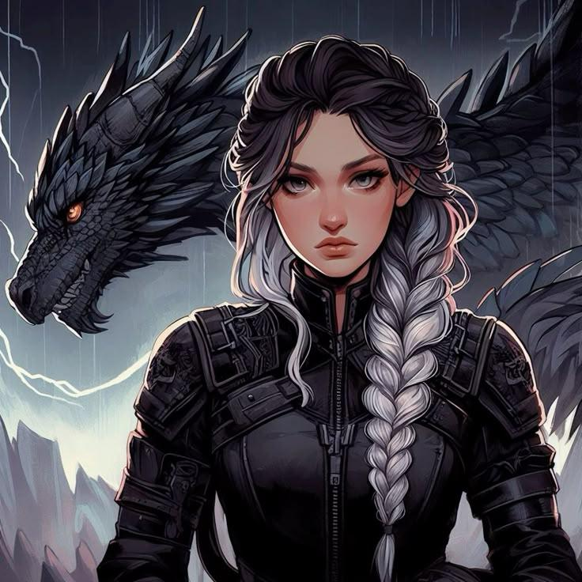
Xaden, a key character in the series. A powerful and influential rider at Basgiath, Xaden is responsible for leading the Fourth Wing. His family history and his connections to the rebellion make him an important figure in the series.
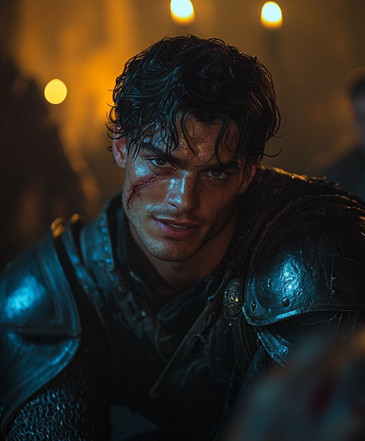
Dean Aetos, Violet's childhood friend. Violet's childhood friend and a rider trained at Basgiath. Dain values rules and military protocol, and his beliefs sometimes conflict with Violet's decisions.
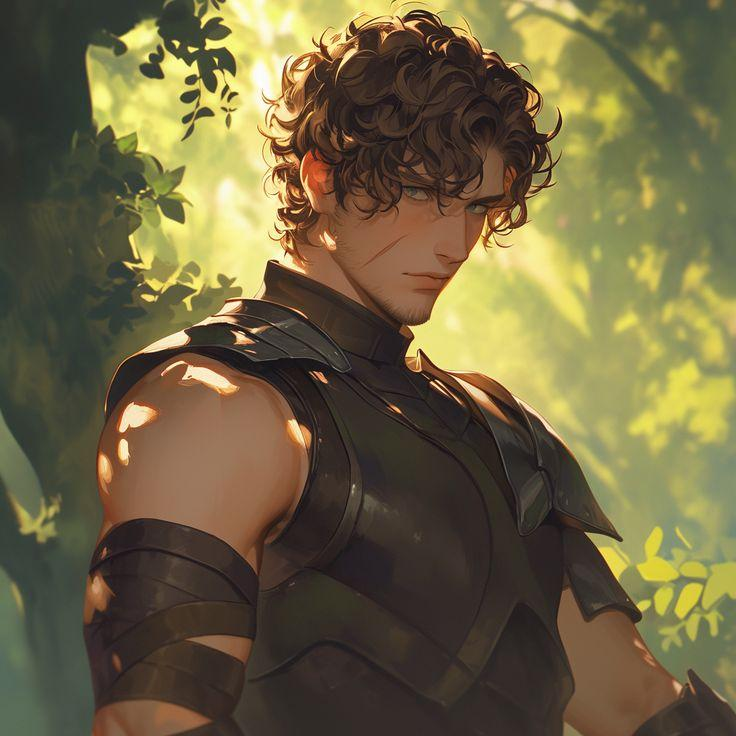
Rhiannon Matthias, Violet's friend. A fellow cadet and one of Violet's closest friends at Basgiath. Rhiannon is determined, resourceful, and an important source of support throughout their training.
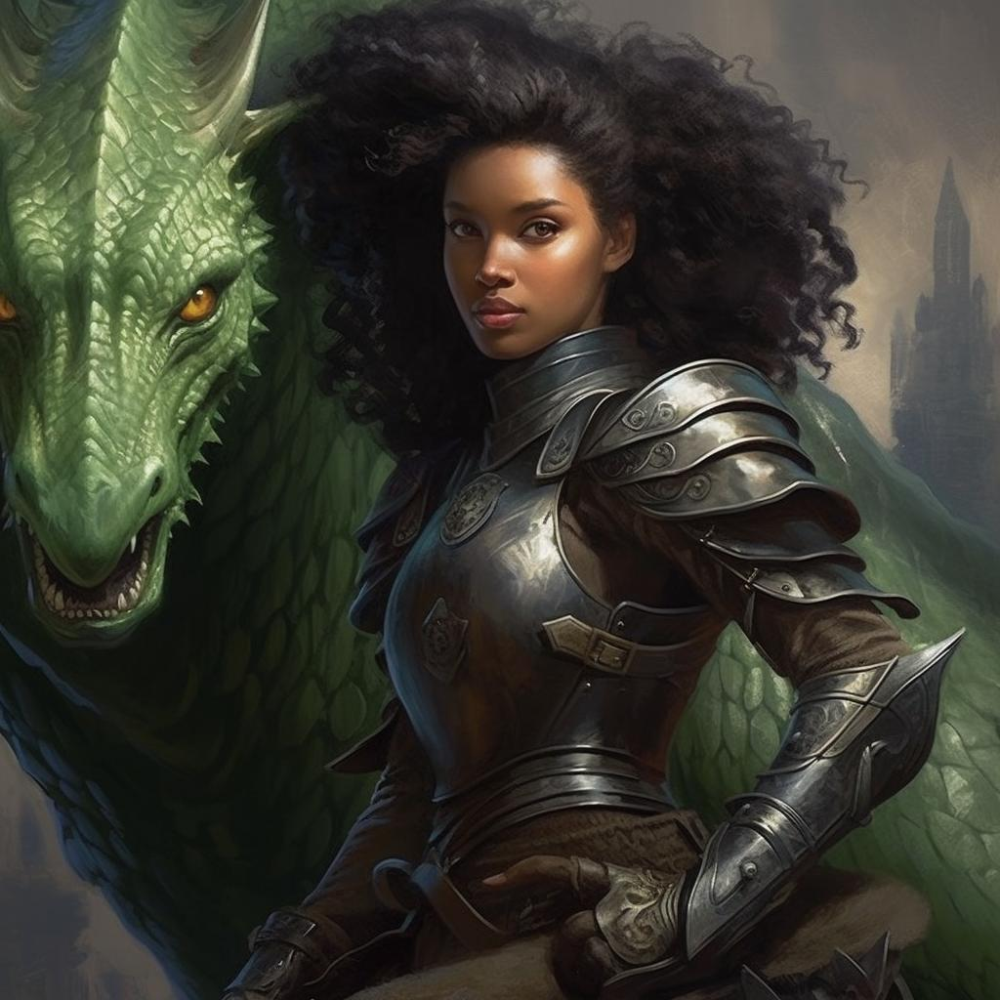
Liam Mairi, Marked One. A skilled and loyal rider who becomes one of Violet's closest allies. Liam's background is connected to the rebellion and the children of its leaders.
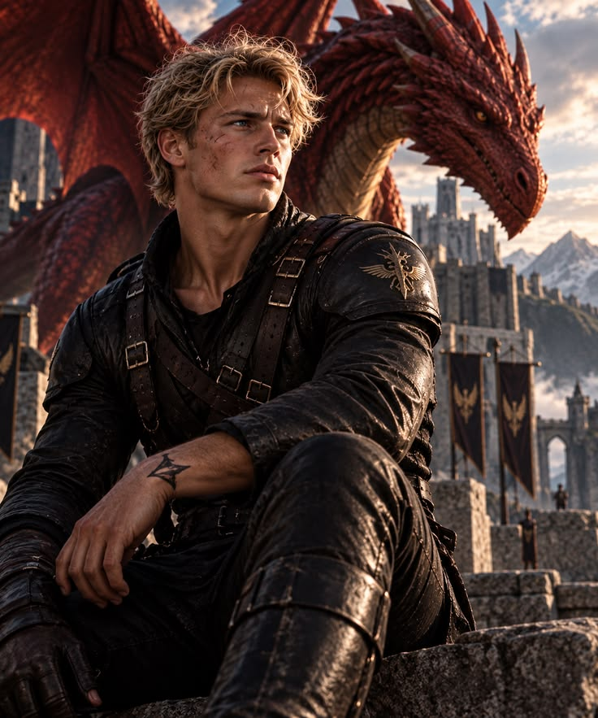
Mira Sorrengail, Violet's older sister. Violet's older sister and an experienced rider in Navarre's military. Mira is protective of her family and concerned about the dangers Violet faces at Basgiath.
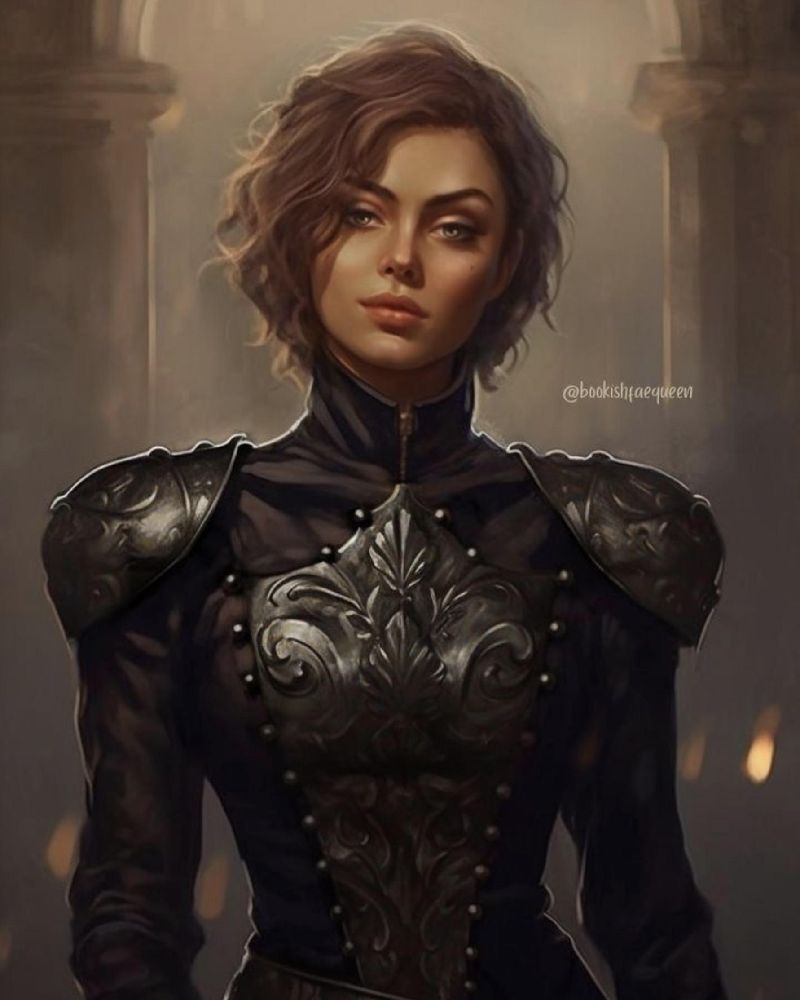
Brennan Sorrengail, Violet's older brother. Irmão mais velho de Violet e Mira, cujo destino é uma parte importante dos mistérios da série.
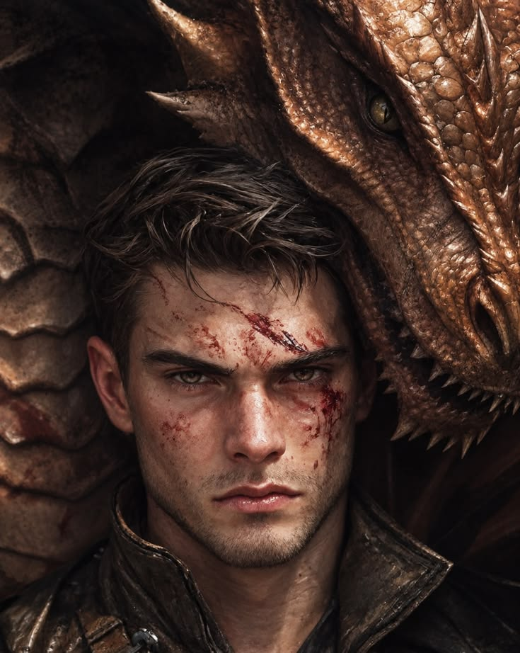
General Lilith Sorrengail, Violet's mother. A powerful military leader and the mother of Violet, Mira, and Brennan. Her strict expectations and decisions have a significant impact on her children's lives.
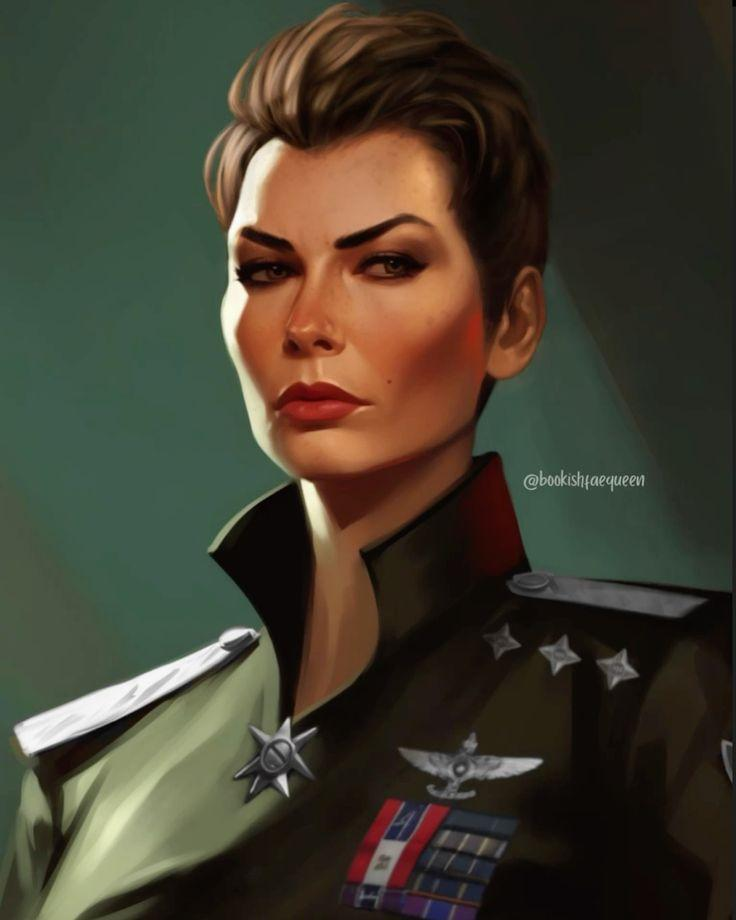
Other Students
Ridoc Gamlyn: A witty and sociable rider who becomes one of Violet's friends.
Sawyer Henrick: A fellow rider and member of Violet's circle of friends.
Jesinia Neilwart: A Scribe and one of Violet's friends, connected to the study and preservation of knowledge.
Jack Barlowe: A hostile cadet whose rivalry with Violet becomes a source of danger.
Imogen Cardulo: A rider connected to Xaden and the marked cadets, who becomes relevant to Violet's training.
Garrick Tavis: A trusted friend of Xaden and a fellow rider.
Bodhi Durran. Xaden's cousin and a rider connected to the marked cadets.
Catriona “Cat” Cordella. A rider from Poromiel whose interests and relationships become relevant in later books.
Aaric Graycastle. A cadet who conceals an important part of his background.
Sloane Mairi. A rider connected to Liam's family, introduced in the later part of the series.
Books in the Series
The Empyrean series by Rebecca Yarros takes readers into a fantasy world filled with dragons, magic, romance, and war. Each book expands the universe of Navarre, revealing new characters, secrets, and challenges that shape the journey of its protagonists. The following section presents the books in the series in publication order, including their main plots and key information.
Fourth Wing (2023)
Fourth Wing is the first novel in Rebecca Yarros's The Empyrean series. The story follows Violet Sorrengail, who expects to join the Scribes Quadrant and devote her life to books and history. However, her mother, General Lilith Sorrengail, orders her to enter the Riders Quadrant at Basgiath War College, where candidates train to become dragon riders. Despite her physical challenges, Violet must rely on her intelligence, determination, and adaptability to survive the demanding training. As she faces dangerous trials, rivalries, and unexpected alliances, she begins to question the history she has been taught and the secrets surrounding her kingdom.
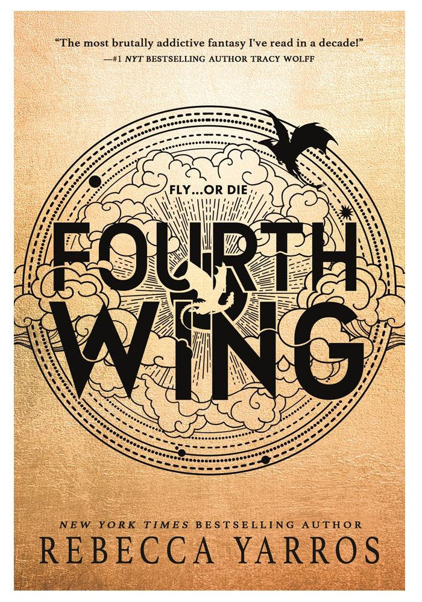
Iron Flame (2024)
Iron Flame is the second novel in The Empyrean series and continues Violet Sorrengail's journey after her first year at Basgiath War College. Having survived the dangerous selection process and formed bonds with dragons, Violet faces a new stage of training that challenges her physical endurance, magical abilities, and emotional strength. As the pressure at the college intensifies, Violet must deal with new threats, complicated relationships, and secrets that could change her understanding of Navarre. The novel expands the conflict introduced in Fourth Wing and explores the difficult choices that riders must make as the danger surrounding their world grows.
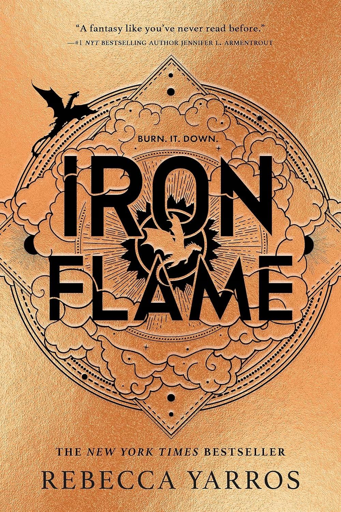
Onyx Storm (2025)
Onyx Storm is the third main novel in The Empyrean series. After spending nearly eighteen months at Basgiath War College, Violet Sorrengail faces a world in which the conflict can no longer be treated as a distant threat. With enemies approaching from different directions, the characters must confront the consequences of previous discoveries and the growing dangers surrounding Navarre. The novel expands the series' central conflict, placing greater emphasis on war, alliances, uncertainty, and the difficult decisions that shape Violet's journey. It continues the story established in Fourth Wing and Iron Flame.
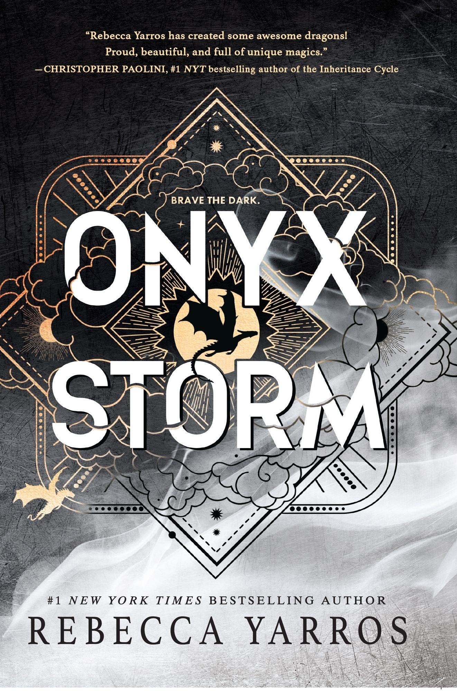
Threshing Day (2026)
Threshing Day is a companion collection set in the world of The Empyrean. It brings together thirteen stories centered on the experiences of riders during Threshing, the event in which dragons choose the humans with whom they form bonds. The collection revisits important characters and explores the moments that helped shape their paths as dragon riders. Unlike the three main novels, Threshing Day is not a direct continuation of Violet and Xaden's story after Onyx Storm. Instead, it offers additional perspectives on the series' characters and the bonds between riders and dragons.
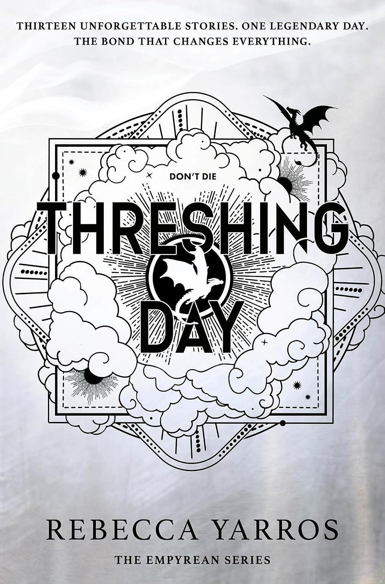
Television Adaptation
The Empyrean, Rebecca Yarros's bestselling fantasy series, is being developed for television by Amazon MGM Studios. In October 2023, it was reported that Amazon had acquired the adaptation rights to the book series, with Fourth Wing, the first installment, selected as the starting point for the project. The acquisition opened the possibility of bringing the wider fictional universe to the screen, although individual adaptations of every book have not been officially confirmed. In May 2026, Amazon MGM Studios officially ordered the Fourth Wing television series for Prime Video. The announcement marked an important step forward after several years of development. Rather than a feature film, the project is being developed as a television series, allowing the story to explore its characters, magical world, and military conflicts across episodes.
Story and Setting
The first adaptation will focus on Fourth Wing, introducing viewers to Violet Sorrengail, a twenty-year-old who is ordered by her mother, General Lilith Sorrengail, to attend Basgiath War College. Although Violet originally intended to become a Scribe, she must compete to join Navarre's elite dragon riders. The story combines fantasy, romance, military training, political intrigue, and dangerous encounters with dragons. Its adaptation presents the opportunity to bring the series' distinctive creatures, magical bonds, and fictional locations to the screen. Basgiath War College, the Riders Quadrant, and the relationships between Violet, Xaden Riorson, and their fellow cadets are central elements of the first book's storyline.
Production Companies and Creative Team
The project brings together several production companies and experienced television professionals.
Amazon MGM Studios: The studio developing the adaptation for Prime Video.
Meredith Averill: Serves as showrunner and executive producer and is adapting the novels for television.
Lisa Joy: Co-founder of Kilter Films, executive producer, and director of the pilot episode.
Jonathan Nolan and Athena Wickham: Executive producers representing Kilter Films.
Michael B. Jordan and Elizabeth Raposo: Executive producers representing Outlier Society.
Liz Pelletier and Sherryl Clark: Executive producers representing Premeditated Productions.
Rebecca Yarros: The author of the novels and an executive producer on the adaptation.
The involvement of Yarros in the production gives the project a direct connection to the original literary work, while the creative team brings experience in fantasy, science fiction, and television drama.
Reported Casting
On October 15, 2026, entertainment publications reported that Esther McGregor had been selected to portray Violet Sorrengail and Emilio Sakraya to portray Xaden Riorson. These reports identified the two leading roles for the adaptation. However, Amazon had not publicly confirmed the casting when TheWrap reported the news, so the information should be treated as reported rather than officially confirmed. The casting of the remaining characters, including the other cadets, instructors, military officers, and dragons, had not been fully announced at that time.
Will Every Book Be Adapted?
Amazon's acquisition of the adaptation rights to The Empyrean covers the literary series, but acquiring rights is not the same as approving a separate production for every novel. The current television order is for Fourth Wing. The possibility of adapting later books, including Iron Flame and Onyx Storm, depends on future production decisions, and no individual television adaptations for those titles have been officially announced. This distinction is important because the book series contains continuing storylines, expanding world-building, and developments that unfold across multiple installments. Future seasons or additional productions could explore more of that material, but the extent of the adaptation remains to be confirmed.
Release Date and Current Status
As of October 17, 2026, Fourth Wing is in development as a Prime Video television series. Amazon has not announced an official premiere date, and further details about filming, the complete cast, the episode count, and the adaptation of later novels remain pending.
This section will be updated as official announcements provide more information about the production.